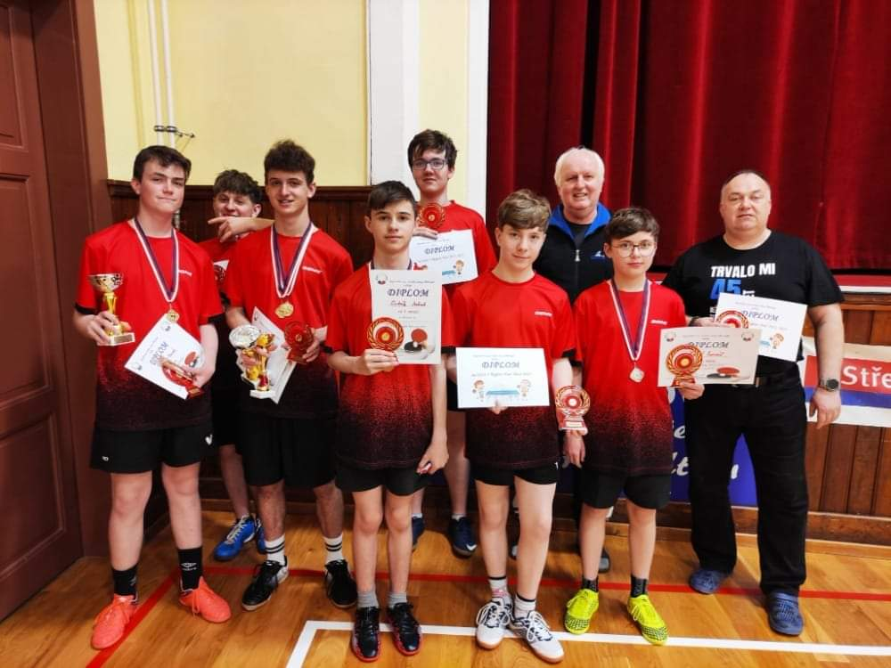

Šestým bodovacím turnajem se zakončila sezóna žactva
a dorostenců v Králově Dvoře. Po sečtení bodů ze všech
turnajů jsme získali tato umístění: 1. místo v kategorii
dorostenců obsadil Lukáš Sviták, ve starších žácích
dominoval na 1. místě Marek Herman, 2. místo potvrdil
Tomáš Karel – naše další olešenská naděje. Na dalších
dobrých místech ve svých kategoriích se umístili: Jakub
Sviták, Martin Svoboda, Miroslav Triner, Jakub Plecitý a
Matěj Tauš.

Nesmíme opomenout naši mládež. Stovky hodin tréninků
stojí za úspěchy žáků a dorostu. O to větší radost máme,
když se, nám trenérům, odvděčí výbornými výsledky
v soutěžích.Takový úspěch se jim podařil před Vánocemi na
Region Tour v Hořovicích. V nedělním klání dne 18. 12. 2022
reprezentovalo TJ Olešnou 6 žáků a 1 dorostenec a po
náročných bojích přivezli kluci celkem 6 medailí. TJ Olešná
se tak stala nejúspěšnějším týmem tohoto turnaje.
Reprezentovali nás: Lukáš Sviták, Miroslav Triner, Jakub
Plecitý, Tomáš Karel, Marek Herman, Matěj Tauš a Jakub
Sviták. Pro nás to byly medailové žně, kluci vybojovali dvě
zlaté, dvě stříbrné a dvě bronzové medaile v divizích A, B, C.
Zkrátka jsou to borci!.